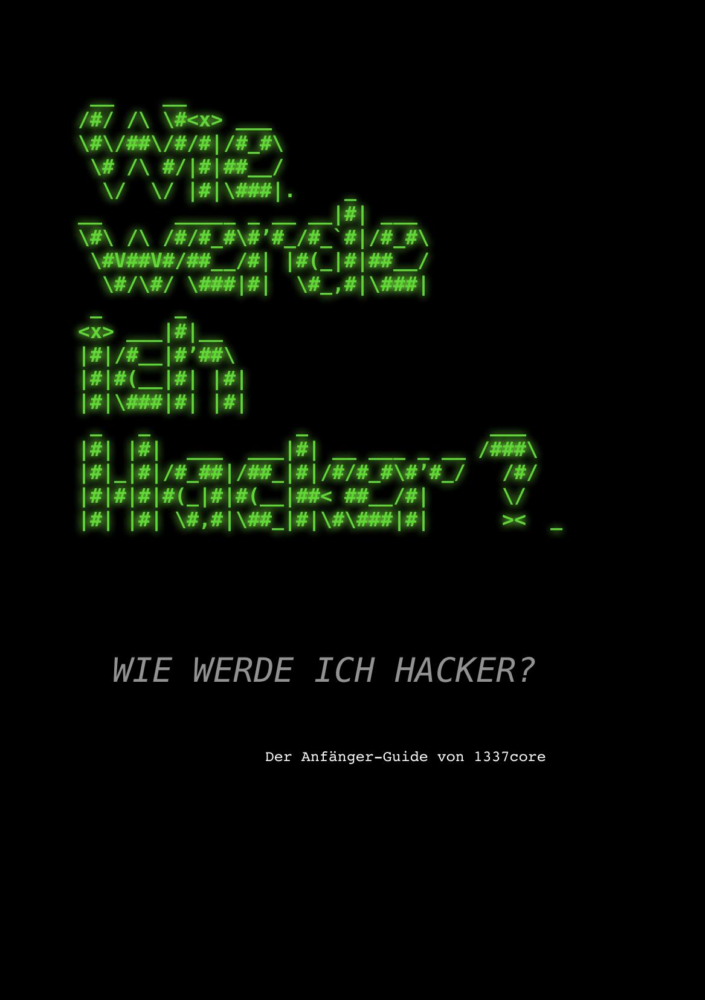

1337core
Hey, ich bin Alex und wohne in Saarbrücken. Ich mag das WWW, Computer, Hacking und Pizza! 🌏🏄
Im Netz bin ich erreichbar auf 🐦 Twitter, über 📱 Threema, 💌 PGP-Mail und 🗝 Keybase. Ab und zu verkaufe ich elitäre 👕 T-Shirts und Hoodies. Freitagnachts streame ich 📺 Hacking auf Twitch.
Internet-Safari 🦒🐠🌍
Buch: Wie werde ich Hacker?
Ich hatte das Bedürfnis einen (hoffentlich besseren) Hacking-Anfänger-Guide 📄 zu schreiben.

"Wie werde ich Hacker?" Anleitung als kostenloses eBook oder PDF!
Darin geht es um Netzkultur, Hacker-Ethik, IT-Grundlagen, Programmieren lernen mit Hilfe des Internets,
Webseiten Hacking, Excel-Trojaner, Internet scannen und sich wundern welche ungeschützten Daten
erreichbar sind. Ungefähr die Hälfte des Buches sind Hacking- oder Spaßprojekte: RPG Chatbots, IMSI-Catcher,
Lockpicking und Bad-USB.
Mehr als 260 Seiten mit kleinen Einblicken in verschiedenste Themen und wie du dich darin einarbeitest.
Version: 0.7 (Public Beta):
ISBN: 978-3-753129-91-4
EPUB VERSION:
Download,
Magnet
PDF VERSION:
Download,
Magnet
TXT: Github Repo (nur Text)
BUCH: ECHTES PAPIER
barcamp
Mein alter Barcamp Vortrag über Scriptkiddies. Da war ich 26 Jahre jung.
security
- 📩 Sicherer E-Mailclient mit OpenPGP (in Entwicklung)
- 🔥 Web Security Bughunting
- 📋 Open Source Intelligence für Awareness Kampagnen
- Wordpress aus Hackersicht (Präsentation, PDF)
- 🎖 Apple Security Hall of Fame (2012)
- 🎖 Microsoft Security Hall of Fame (2012)
- Zum Scriptkiddie in 60 Minuten (Barcamp Session)
- Alex erzählt was über Sicherheit (Barcamp Session)
- Whitehouse.gov Petitionsystem Hack (XSS) 2011
- NATO Research and Technology Hack (LFI) 2011
tools
- Simpler Pen & Paper Charakterbogen
- Pen & Paper - Einfaches Regelwerk
- Telegram Würfel-Chatbot
- Pen & Paper Würfel
- PWD Hash Generator
- NSA Proof Password Calculator
- HTML Encoding and Base64-Konverter
- HTML-Entities
backlinks
- 👍🏼 It’s World Emoji Day! (Glitch)
- Das mobile Zeitalter hat begonnen – Die Sicherheitslücken bleiben (Mobildiscounter)
- Persistent XSS Vulnerability in White House Website (The Hacker News)
- Trollitik - Eine ZDF-Kurzdoku über den miesen Ton im Netz (ZDF Info, 2013)
- Vom Netzkind zum Netzexperten (Saarbrücker Zeitung, 2012)
- Gamer-Rache: RTL-Seite wurde gehackt! (Promiflash, 2011)
- Erboste Gamer kapern RTL-Website (SZ, 2011)
shitty mini games
- 🔨 Whac-emoji
- Emoji duel
- 💎 Twitter RPG Textadventure
- AlexCoins - better than bitcoins
- Robots vs Scientists (Github, Video)
- Virtuelles Haustier (Video)
- Reverse Flappy Bird (Stream)
- Codebreaker (Erklärung, MakingOf)
- One Button Game (Video)
- Weltraumhandel (Video)
- 🌿 Retro Farm
- Zombie Hölle
- Blockjumper
- Der verfluchte Wald
- Detektiv X
fun fun fun
- Twitter to Keyboard (Video)
- Hasskommentar + VONG Konverter UPDATE! (Chrome, Firefox)
- OK Boomer
- Verspottify
- Aquarium + Emojis
- Ariana Wave
- Giphy TV
- What is your hacker name?
- Twitter Pen and Paper
- Hackerspruch Generator
- Collatz conjecture
- Bundesregierungswürfel 2017
- Sondierungssimulator
- Homöopathischer Viren-und Trojanerschutz
- Bildschirmschoner
- Deutsch - Vong Übersetzer für Chrome
- Facebook Hasskommentar-Übersetzer für Chrome
- Facebook Empörungsbeschleuniger für Chrome
- Das exklusive Bibiphone
- Datenschutz made in Germany
- Leetspeak Konverter
tweets
Bitte denkt doch mal daran Webseiten wieder hoch zu scrollen, wenn ihr fertig seid. Das nervt jeden, der sie danach anschauen will. Mann!
"Das waren die russischen Hacker", hört sich besser an als "ich klicke auf jeden E-Mail Anhang und folge den Anweisungen!".
"Alter Table!"
Ghettokind fällt Vokabel für Tisch wieder ein oder SQL Administrator ändert
Tabelle?
Meine TV-Idee: Verschiedene Android-Smartphones treffen sich in einer Fernsehshow. Es gibt Rosen zu
verteilen,
am Ende bleibt ein Smartphone übrig und bekommt ein Update auf die aktuellste Android Version.
Der Patchler.🌹
Das einzige Tempolimit in Deutschland gibt es auf der Datenautobahn.
Filmtitel raten: Alte Programmiersprache + angeborener Mechanismus zur Verhaltenssteuerung.
@1337coreWas ist Leetspeak?
Leetspeak (kurz: 1337 für Elite) kann schwer zu lesen sein und ist dadurch als eine Art Geheimcode bestimmter Gruppen der Computerszene zu betrachten. Ursprünglich durchaus ernst gemeint, wird sie heute jedoch fast nur noch in selbstironischer Form genutzt.
Selbstironie ist eine Ironie, deren unmittelbare Zielscheibe die eigene Rolle oder Meinung ist und die daher eine spielerische, relativierende oder sogar kritische Haltung sich selbst gegenüber einnimmt.
Damit verbindet der Sprecher dennoch die Erwartung, dass der wahre Sinn seiner Äußerung verstanden werde, wenn auch vielleicht nicht von jeder Person respektive nicht von jeder Person in vollem Umfang.
Quelle: Internet
H4CK T3H PL4N37 <3